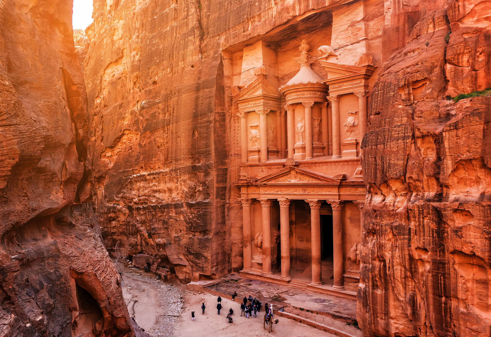

Petra es una ciudad arqueológica famosa en el desierto, al sudoeste de Jordania. Fundada alrededor del 300 a. C., era la capital del Reino Nabateo. Se puede acceder a través de un estrecho cañón llamado Al Siq y contiene tumbas y templos tallados en acantilados de arenisca de color rosa, motivo por el que se la conoce como la "Ciudad Rosa".
Petra es una antigua ciudad ubicada en el desierto al suroeste de Jordania, fundada alrededor del siglo IV a.C. por los nabateos, un pueblo árabe nómada que estableció un próspero centro de comercio gracias a su estratégica ubicación en rutas comerciales de especias, incienso y otros bienes entre Arabia, Egipto y el Mediterráneo. Famosa por su arquitectura excavada en roca y su sistema de canalización de agua, Petra floreció hasta el siglo I d.C., cuando fue anexada por el Imperio Romano. A partir del siglo IV d.C., terremotos y cambios en las rutas comerciales contribuyeron a su declive, y la ciudad fue abandonada. Durante siglos, Petra permaneció oculta para el mundo occidental hasta que fue redescubierta en 1812 por el explorador suizo Johann Ludwig Burckhardt. En 1985, fue declarada Patrimonio de la Humanidad por la UNESCO debido a su valor histórico y arquitectónico. Petra, conocida como la "ciudad rosa" por el color de la piedra arenisca, es una de las atracciones turísticas más visitadas de Jordania y en 2007 fue nombrada una de las Nuevas Siete Maravillas del Mundo.
La cultura de Petra refleja la riqueza y sofisticación de los nabateos, quienes combinaron influencias arquitectónicas griegas, romanas, egipcias y árabes en sus monumentos tallados en roca. Como cruce de importantes rutas comerciales, Petra fue un centro de intercambio cultural y económico, donde se mezclaban diferentes tradiciones y religiones. Su avanzado sistema de gestión del agua muestra la habilidad de los nabateos para prosperar en un entorno desértico. Los elaborados templos, tumbas y altares indican una sociedad con prácticas religiosas complejas y una economía floreciente. Hoy en día, Petra es un símbolo de la rica herencia cultural de Jordania y un testimonio del ingenio humano.
Petra fue nombrada maravilla del mundo el 7 de julio de 2007
